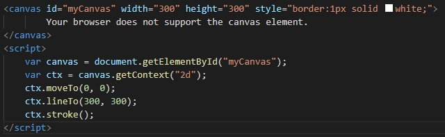

The video tag is a standard way to embed a video in a web page. Before HTML5, a video could only be played in a browser with
a plug-in (like flash). There are 3 supported video formats in HTML5: MP4, WebM, and Ogg.
A source tag with the video file must be included with the video tag. Multiple source tags can be used, and the browser
will use the first recognized format.
Attributes
The controls attribute adds video controls, like play, pause, and volume.
Autoplay will start the video automatically when the page loads, but autoplay is used instead of the controls attribute, so the user cannot press
play, pause, or change the volume.
Loop will play the video repeatedly.
Height and width can and should be set, otherwise the page might flicker while the video loads.
Example video tag:
Canvas Tag
The canvas tag is used to draw graphics via JavaScript. It is only a container for graphics, JavaScript does the
actual work. Canvas has methods for drawing paths, boxes, circles, text, and adding images.
Canvas tags should include an id and the width and height for the size of the canvas.
Example canvas tag and JavaScript code to draw a circle:

Audio Tag
The audio tag is used for audio. It supports 3 formats: MP3, Ogg, WAV. Just like the video tag, a source tag is
always needed to specify the audio file.
Attributes
The audio tag has very similar attributes to the video tag.
The controls attribute adds audio controls, like play, pause, and volume.
Autoplay will start the audio automatically when the page loads, but autoplay is used instead of the controls attribute,
so the user cannot press play, pause, or change the volume.
Loop will play the audio repeatedly
Preload is a tag that specifies if and how the author things the audio should be loaded when the page loads.